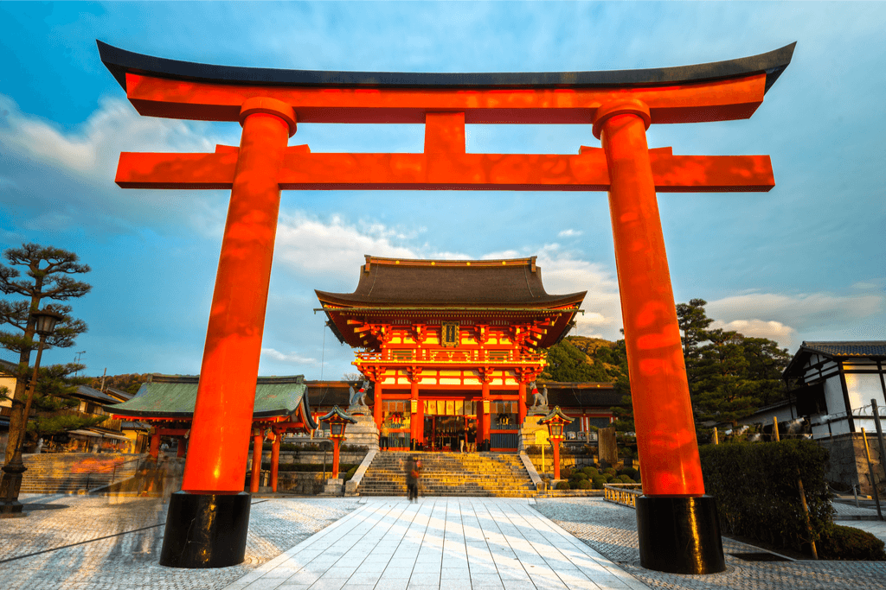
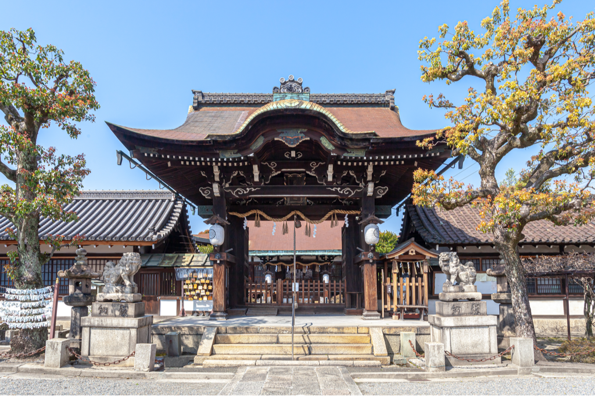
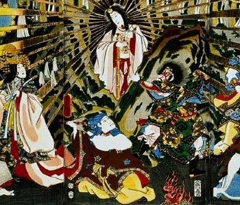
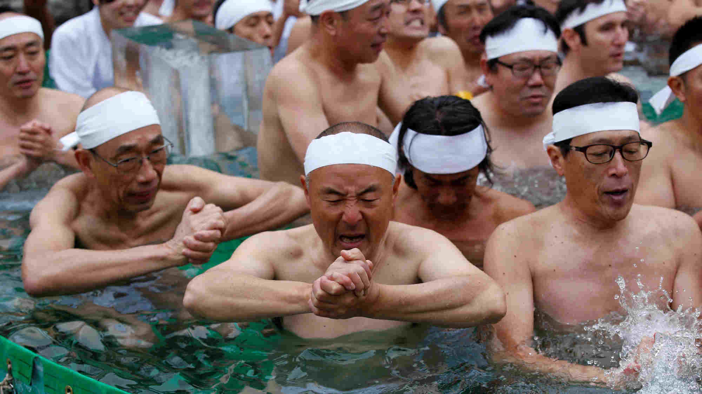
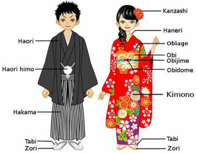

Shinto

✤ The word "Shintō" means "the way of kami"
✤ Shinto is a word religion, and the main religion practiced in the small island country Japan
✤ It's origins can be traced back to ancient times
✤ Usually takes place at jinja's (Shinto Shrines) which are found throughout Japan
✤ Each shrine is dedicated to a specific kami

✤ Shinto does not have an official founder, nor does it have scriptures like a Bible
✤ Instead, it has kami's which are "Shinto Gods"

✤ Kami's take the shape and form of various important
concepts in life, like rain, mountains, fertility,
etc.
✤ A key thing to remember is that they are not "Gods"
and do not refer to the traditional Western
meaning of
a God
✤ When humans die, they turn into kami and are forever revered by their families
✤ The kami considered to be the most important is The Sun Goddess Amaterasu
✤ Visiting shrines allows people to connect and pay respect to kami's
✤ Before you enter a shrine, you usually experience a ritual of purification to cleanse yourself of impurities
✤ Visitors usually offer prayers to the kami
✤ Many Shinto shrines have a gate called the torii, and walking through these gates is like walking through the gates of heaven. It symbolizes a sacred space.

✤ Purification is an essential aspect of Shinto rituals
✤ It involves symbolic acts like washing hands and mouth at a special basin before entering the shrine
✤ This ritual signifies the purification of the body and spirit before approaching the kami
✤ Prayers in Shinto are a means of expressing gratitude, seeking guidance, and requesting blessings
✤ Individuals may clap their hands or bow during prayers as a sign of respect to the kami
✤ Shinto festivals, known as Matsuri, are vibrant celebrations held at shrines throughout the year
✤ These festivals involve traditional performances, processions, and offerings to the kami
✤ Participants often wear colorful traditional attire during these festivals
✤ Shinto places a strong emphasis on nature, with many kami associated with natural elements like trees, rocks, and rivers
✤ Respect for the environment is integral to Shinto beliefs
✤ Nature is seen as a manifestation of the divine, and preserving it is a spiritual duty
✤ Shinto promotes the idea of harmonious living with both the natural and spiritual worlds
✤ The concept of purity and balance is central to Shinto philosophy
✤ Maintaining a harmonious relationship with kami ensures well-being and prosperity
✤ Shinto rituals often involve the use of sacred objects, such as ritual wands and mirrors
✤ These objects are believed to hold spiritual significance and are used in ceremonies to communicate with the kami
✤ The selection and craftsmanship of these objects are highly symbolic and ritualistic

✤ Traditional Shinto ceremonies may involve participants wearing special clothing, such as priests donning elaborate robes and headdresses
✤ The attire varies depending on the nature of the ceremony and the roles of the participants
✤ Clothing often symbolizes the roles and responsibilities of those participating in the ceremony
✤ Shinto rituals are often connected to the cycles of life, including birth, marriage, and death
✤ Each stage of life is considered sacred, and ceremonies are performed to seek blessings and express gratitude
✤ Life cycle ceremonies are community events, reinforcing social bonds and shared values
✤ Shinto shares similarities with indigenous spirituality, particularly in their animistic beliefs and deep reverence for nature. Both traditions are rooted in the spiritual connection to the natural world and ancestral spirits.
✤ Animistic beliefs and a focus on nature are also found in certain Native American religions, drawing parallels with Shinto's emphasis on the sacredness of the environment.
✤ Shinto differs significantly from Abrahamic religions like Christianity, Judaism, and Islam. In Christianity, the belief in the Holy Trinity (Father, Son, and Holy Spirit) and the centrality of Jesus Christ as the savior distinguishes it from Shinto's polytheistic nature and absence of a singular, all-encompassing deity.
✤ In Judaism, the strict monotheistic belief in one God, and the covenant between God and the Jewish people contrasts with Shinto's diverse pantheon and lack of a singular, overarching divine figure.
✤ Islam, as a monotheistic faith, emphasizes the absolute oneness of Allah and the teachings of Prophet Muhammad. This monotheistic foundation differs fundamentally from Shinto's polytheistic framework and the absence of a singular, omnipotent deity.
✤ Additionally, Shinto differs from Hinduism in terms of its cosmology, with Hinduism being a complex, diverse tradition encompassing a wide array of beliefs and practices, including the concepts of karma, dharma, and moksha.
✤ Strengths: Shinto's emphasis on harmony with nature fosters a deep connection to the environment, promoting environmental stewardship. The simplicity and beauty of Shinto rituals also contribute to a sense of cultural identity.
✤ Strengths: Shinto provides a strong sense of community and social cohesion through shared rituals and festivals, reinforcing a collective identity.
✤ Weaknesses: Shinto's lack of a formal moral code and scripture can be seen as a weakness, as it may lead to a lack of ethical guidelines for followers.
✤ Weaknesses: The exclusivity of some Shinto rituals and practices can create a barrier for those outside the tradition, limiting inclusivity and understanding among diverse communities.
✤ Connections with Christianity: Both Christianity and Judaism share common roots in the Abrahamic tradition, with Christianity considering Jesus as the Messiah while Judaism awaits the Messiah's arrival.
✤ Connections with Islam: Islam shares similarities with Christianity and Judaism, recognizing many of the same prophets, such as Abraham and Moses, while also incorporating the teachings of Prophet Muhammad.
✤ Connections with Hinduism: Hinduism and Sikhism share historical and cultural ties, with Sikhism emerging in the context of South Asian religious diversity and responding to both Hindu and Muslim influences.